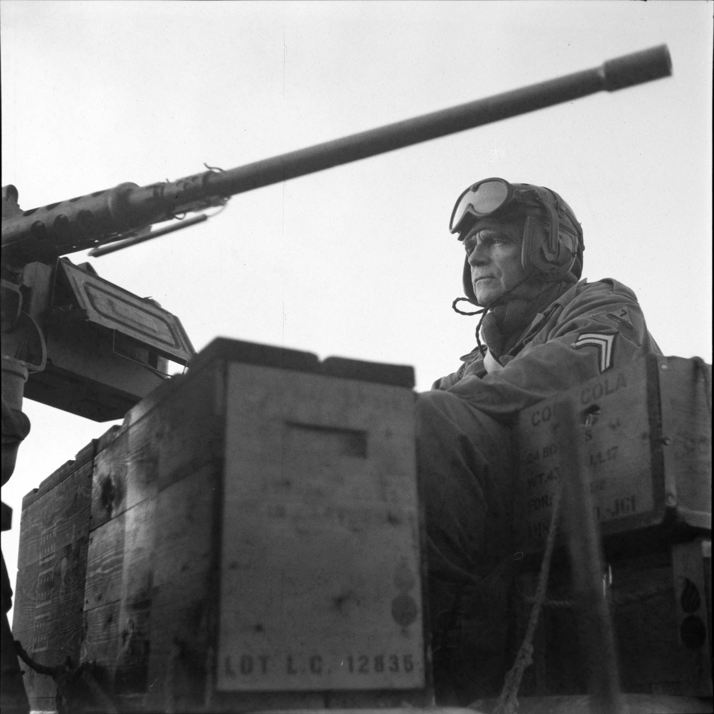

The Red, White and Blue
Army Newspaper
Published Monthly in Europe
A tribute to the wartime
“Stars and Stripes”
Army Newspaper
Published Monthly in Europe
A tribute to the wartime
“Stars and Stripes”
By Red, White & Blue staff writers, from the January 2026 issue
In Blizna near Rzeszów, Poland, amateur archaeologists dug up several intact missile parts at the former testing site there. Parts include engine components and a warhead, which survived impact because the missile was used for testing or training, and as such did not carry an explosive load.
The center section of the rocket is missing, as the fuel it carried most likely exploded on impact. V-2 rockets typically carried over four tons of fuel, a mixture of ethyl alcohol and liquid oxygen.
A museum dedicated to the missile tests now stands on the former testing site, a spokesperson of which called the new discovery “extraordinary”.
By Red, White & Blue staff writers, from the January 2026 issue
Killed by SS death squad Sonderkommando Albrecht in Dokkum, the Netherlands, these victims are honored each year. Mayor Johannes Kramer of the municipality of Noardeast-Fryslan spoke to the audience gathered not far from the monument. The group marched in silence to the stone monument, in which the names of all 20 victims are carved. Wreaths and flowers were laid by the major, students of the local college, and other attendees.
When German occupiers found a stash of weapons at a farm near Aalsum on the 13th of January 1945, several people were arrested, including pharmacist Pieter Engelbertus Gunster. As his pharmacy was used as headquarters of the local resistance, they feared that information would leak during his interrogation. To safeguard the resistance fighters, a daring operation was launched to liberate Gunster from a prisoner transport. During this successful operation the driver and a guard of the vehicle were killed.
Allegedly, the furious commanding officers of the death squad swore to raze the village of Dokkum to the ground. After intervention from the headquarters of the Sicherheitsdienst in Groningen a “lesser” reprisal was pursued: 20 random prisoners from the cities of Leeuwarden and Groningen were brought to Dokkum and executed without a trial.
By Red, White & Blue staff writers, from the January 2026 issue
As unusually thick snow blocked roads around Bethesda, Wales, stuck civilians met an unlikely savior. A Studebaker M29 Weasel, driven by Andrew Singleton, a WWII collector and re-enactor who took part in Llandudno’s VE Day 80 celebration last May.

Illustration photo by Red, White & Blue staff photographer. A member of the 7th Armored Division sits on an M8 Greyhound, ready to move out. December 2024, Grandménil, Belgian Ardennes.
The Red, White and Blue Army Newspaper is a tribute to the World War II-era Stars and Stripes Army Newspaper. With this passion project, we aim document and preserve the work of wartime correspondents through reenactment, while truthfully reporting on events in the European Theater of Operations.
In monthly issues we will cover news topics such as the reenactment scene in Europe, living memory such as memorials and tributes, and “new history” such as archaeological or archive finds. This news will be framed with historical analysis and “infotainment” in the style and spirit of the original Stars and Stripes issues, such as poetry and mail from readers. Additionally we will report notable upcoming events.
As a real journalistic medium, Red, White and Blue will report on current events to the highest modern standards of journalism. The editorial line will not shy away from controversial topics such as allied war crimes and misogyny within the ranks.
Stylistically, Red, White and Blue will be an as-close-as-possible recreation of the 1942-1945 Stars and Stripes Army Newspaper. This includes visual style elements, such as visual language of photography and length of paragraphs, and writing style, including phrasing and spelling. This will ensure a product that does not look out of place among authentic uniforms and original attributes. As of writing, the visual styling of the paper is most closely related to that of the earliest Stars and Stripes issues, published in Algiers in the fall of 1942, but this is subject to change, just as it was in 1942-1945.
To ensure the success of this project, we need two things: content and distribution. For both of those we ask for helping hands within the historical and reenactment scene.
We are looking for both regular and occasional contributors. Initially on a purely voluntary basis, but we aim to achieve a point where contributors can be compensated fairly for their efforts. We ask contributors to adhere to the editorial guidelines on topics, style and quality of work, and to bring reenactment to as much of the journalistic process as possible: attend events in uniform, use era-appropriate equipment, and so on.
Of reenactment groups that do not focus on reporting or correspondence we first of all ask to be kept in the loop. Notify us of upcoming events and tacticals, or write about past events. These can be in basic “bullet point” style, and will be rewritten as needed for publication. Secondly, we ask to help with distribution. We propose a system that is beneficial to everyone involved: we sell an agreed upon number of copies to your group or outfit at a discounted price. You sell the copies to visitors of your event for the price indicated on the front page, and pocket the difference. We are aiming for a 40-50% profit per sold copy.
Current editions can be read and left scattered around the camp, older issues can be used as packaging material or fire starter, making the paper both a news medium and a reenactment attribute of its own.
While our short term goal is to establish a monthly publication that doesn’t lose money with each edition, our long term goals include becoming a name as recognizable as “Stars and Stripes”, and taking an active role in organizing events such tacticals and memorial drives. We hope you are as enthusiastic as we are, and look forward to hearing from you.
By Red, White & Blue staff writers, from the January 2026 issue
Hessy Lewinsohn was only six months old when her baby photo appeared on the cover of Sonne ins Haus, a Nazi propaganda magazine for families. The photographer who took the shot entered it in a competition for "the most beautiful Aryan baby" in 1935, and won. The photograph was picked personally by Nazi Propaganda Minister Joseph Goebbels. However, the Lewinsohn family was Jewish, and the photographer entered the photo to “make fun of the Nazis”. After the photograph appeared in more propaganda pieces, the Lewinsohn family fled Germany, via Latvia, France and Cuba, fearing retribution, before settling in New York in 1949.
Hessy, now known as Hessy Levinsons Taft and a professor and researcher at St. John's University, first recounted her story almost 80 years later, in 2014. Reflecting on events she said: "I can laugh about it now, but if the Nazis had known who I really was, I wouldn't be alive."
She died in her San Francisco home, on 1 January 2026, at the age of 91.
By Red, White & Blue staff writers, from the January 2026 issue
During the Vistula–Oder offensive in 1945, the Soviet Army performed cleansing operations in occupied areas, executing without trial suspected collaborators and “enemies of the people”. One such “enemy” was Elisabeth Frenzel, of Duczów Maly, her “crime” being that she owned a relatively large area of land. Upon occupation of her village, she was arrested and taken out to the forest, where she was killed by having the side of her skull shattered with a blunt object. After remembering and relaying her story for 80 years, villagers were able to help archaeologists to finally find her resting place. She will be exhumed and reburied at the Wielkie War Cemetery near Wroclaw.
By Red, White & Blue staff writers, from the January 2026 issue
The 10th volume of letters covers 1942-‘44 in Britain, totaling 1,080 pages. The correspondence, addressed mainly to family members, covers many aspects of daily life during the war, such as air raids, food rationing and isolation from the outside world.
As Eliot worked at a publishing house, the letters also contain sharp and revealing literary commentary on the works sent in for publishing, often accompanied by an apologetic note that publication was not possible at that time. Publishing houses faced major paper shortages, among other challenges.
The book also contains photographs of Eliot in the period the letters were written.
By Red, White & Blue staff writers, from the January 2026 issue
A chance encounter after 83 years. Eva Weyl (90) from Amsterdam lived and survived the holocaust as a young child. For 2.5 years she was a prisoner in the Westerbork transit camp. But she’s one of the lucky ones. Of the over 100,000 prisoners to pass through this camp, the vast majority was murdered in other camps. Arguably the most well known Holocaust victim, Anne Frank, among them. For the last 18 years Weyl has been lecturing school children about the past and what it means for the time we live in now.
It was after one such lecture that she was sitting in a cafe in Dortmund, Germany, and another patron overheard her conversation about the camp. Her husband, she said, also was interned at Westerbork, and they live close by. She called her husband, Wolfgang Polak, and invited him to the cafe. Weyl showed Polak the group photo that was taken in the camp in June 1942, which she always carries on her person. On the eerily ordinary looking photo Polak recognized himself, and recalled the day the photo was taken.
“I was at a loss for words,” Polak told the Dutch Public Broadcasting Agency about the meeting. “We were in that camp. And then, 83 years later, you meet the girl from back then. We’re both still alive.”
Weyl is determined to stay in contact with Polak, and to continue lecturing to youngsters. “I know I have something to tell them,” she says. “Freedom is such a precious gift. It can be taken from you any moment.” Several times she was joined at a lecture by Polak, who now finally recounts his story. “First I could not talk about it, but now I can,” he says.
By Red, White & Blue staff writers, from the January 2026 issue
The French submarine Le Tonnant has been located off the coast of Spain by a French-Spanish team of archaeologists. Part of the Vichy-French navy, it defended Morocco on the Axis’ side during Operation Torch. The morning of November 8th, 1942, heavy American bombardment of Casablanca sank numerous civilian and military ships. With a reduced and partially wounded crew, Le Tonnant left port to mount an attack on the Americans. Damaged and depleted, the submarine was scuttled near Cadiz, Spain, where it has now been found and identified.